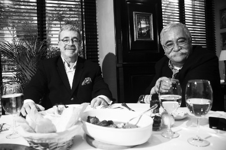

“Mide aşkın mönüsüdür”
Yemeğe aşkınız ne zaman ve nasıl başladı?
İyi bir makine taşıdığıma inanıyorum, bu makinenin de beslenmeye ihtiyacı var. Dolayısıyla çocukluktan beri lezzetli yemekler yerim.
Çocukluğunuzun mutfağından neler hatırlıyorsunuz?
Annemin mutfağından yaprak sarmasını, suböreğini ve tencere yemeklerini hatırlıyorum, bir de çok lezzetli pilav yapardı rahmetli. Benim çocukluğumda evlerde buzdolabı yoktu, teldolap vardı. Su küpü kapının arkasında dururdu, maşrapayla küpün içinden buz gibi suyu alıp içerdik. Yemekler yazın teldolapta, kışın pencerelerin önünde dururdu. Annem Amasyalıydı; Amasya’ya gittiğimiz zaman dağların eteklerine yapılmış eski konaklar çok hoşuma giderdi. Annemin akrabalarının bağları, bahçeleri vardı. Bütün sebze meyve buradan gelirdi. Kışın yazlık malzemeler, yazın kışlık malzemeler hazırlanırdı. Bezli sucuklara bayılırdım. Hâlâ Mısır Çarşısı’na gidip bezli sucuk alırım. Samsun’da her dakika balık yerdik. Balıkçılar kapının önünden, sırtlarında balık dolu tablayla geçerlerdi. Çoğunlukla hamsi, palamut ve kefal satılırdı. Her zaman evde balık olurdu. Balığı hem pişirmesini hem de yemesini çok severim. O zamanlar evlerde fırın yoktu. Annem pidenin içini hazırlar, ben de fırına götürür kuyruğa girerdim. Ben bu tip yemeklerle büyüdüm.
Babanız mutfağa girer miydi?
Babam ressamdı ve estetikle bozmuştu kafayı. Meyveyi çok severdi. Boğazına çok düşkündü, mutfağa da girerdi ama o yemeği hazırladıktan sonra mutfak mutfak olmaktan çıkardı. Çok içki içmemesine rağmen daha çok meze türü şeyler yapardı.
Çocukluğunuzda en sevdiğiniz yemek hangisiydi?
Benim en sevdiğim yemek hep balık olmuştur. Mıhlama, turşu kavurması gibi Karadeniz yemeklerinden çok balık severdim. Annem suböreğini çok güzel yapardı; bol bol suböreği, dolma, sarma, pilav yerdim. Bir adamın çocukluğunda mutfak merakı yoksa, büyüyünce de olmaz. Çocukluğumda bana genellikle salata yaptırırlardı, o yüzden hâlâ çok lezzetli salatalar yaparım. Salatayı lezzetlendirmek için meyve suyu kullanırım. Salata yapmanın bir zorluğu yoktur, ama bütün marifet onun sosunu koymaktadır. Lokantalarda önce zeytinyağını koyuyorlar, bu çok yanlış. Salataya önce tuz atılır, sonra limon, nane ve sirkesi ilave edilir, ardından da mutlaka elle bir güzel karıştırılır. Bir süre bekledikten sonra zeytinyağı konur.
Kaç yaşınıza kadar annenizin yemeğini yediniz?
Liseyi bitirinceye kadar annemin evindeydim, bu yaşa kadar annemin hem yemeğini hem malını mülkünü yedim.
Mutfakla aranız nasıl?
Çok iyidir. Hem elim çabuktur hem güzel yemek yaparım. Yaptığım yemekleri insanlar kapışa kapışa yerler. Bir yerden sonra yemeği benim elimden almak gerekir. Çünkü o sırada un görürüm unu atarım, terlik görsem terliği de atarım, yani yaptığım yemeği bozmakta üstüme yoktur.
En lezzetli yemeklerinizin tariflerini okurlarımızla paylaşır mısınız?
Kuzunun kolu veya boynunu bir güzel haşlarım. Bu suya marketten aldığım hazır mantıyı atarım. Yeterince pişince, mantıyı süzer onun üstüne boyun etini didiklerim. Daha sonra domates suyu, sarmısak, tane karabiber, kaliteli pulbiberle yaptığım sosu dökerim. En üste de sarmısaklı yoğurdu gezdiririm. Ayrıca patlıcan, biber ve kabak dolması da yaparım ve bunların içini çok lezzetli hazırlarım. Bir kere her işin başı soğan; yemekte soğan çok önemli. Bol miktarda soğanı zeytinyağında kavururum, daha sonra pirinci ekleyip kavurmaya devam ederim. Eğer kıymalı yapacaksam kıymayı, dereotunu, maydanozu, baharatları ve dolmalık fıstığı da eklerim. İç piştikten sonra bir süre soğumasını beklerim. Dolmayı domates suyuyla pişiririm, normal su kullanmam. Biz de pişen yemeyi demlemeyi bilmezler. Yemeğin pişmesi kadar, demlenmesi de çok önemlidir. Yemeğe koyacağınız su çok önemlidir, ben yemeğe musluk suyu kullanırım ama önce kaynatırım; benim önceden kaynatılmış bekletilmiş sularım vardır. Bir de ilk eşimden öğrendiğim bir Arnavut yemeği olan soğanlı pilav var. İki baş soğanı kuşbaşı doğrayıp kavururum. Sonra iki bardak pirinci koyup bir süre daha kavururum. İki bardak pirince dört bardak su, mümkünse et suyu ilave ederim. Pilav pişince altını kapatıp üstüne kıyılmış bol dereotu ekleyip demlenmeye bırakırım. Bu yemek inanılmaz lezzetli olur.
Usta bir salatacı olduğunu söylediniz. Değişik bir salata tarifi verebilir misiniz?
Salatada soğan çok önemlidir. Soğan hem aşk iksiridir, bağışıklık sistemini kuvvetlendirir, hem de lezzet doludur. Bol yeşil ve kuru soğanı kıyarım, sarmısakları da ince ince doğrayıp karıştırırım. Sonra küçük küçük doğranmış salatalığı ve domatesi bu karışıma eklerim. Daha sonra bol nane ve pulbiber koyarım. Sirkesini, limonunu, nar ekşisini koyduktan sonra dinlenmeye bırakırım. Bu salataya biraz vişne suyu, biraz yeşil elma suyu da ilave edilebilir; çok da lezzetli olur. Bir de ince kıyılmış pırasa ve soğanı karıştırıp üstüne bir çay bardağı suda bekletilmiş nane dökerim; o da değişik bir salata olur.
Sizin çay merakınız olduğunu biliyorum. Biraz bu merakınızdan söz eder misiniz?
Çayımı Van’dan dostum Yalçın Abi gönderir. Bu kaçak Seylan çayıdır. Seylan çayı insana çok sert gelir. Onun için ben normal Rize çayıyla karıştırırım. Bu karışımı güzel bir şekilde yıkarım; hem de tasın içinde çitiliye çitiliye. Sonra o çayı tel süzgeçten geçirip, kuruturum. Demleyeceğim zaman çaydanlığın içine bu karışımı ve bir tatlı kaşığı da yeşil çay koyarım. Yeşil çay hem buruk bir lezzet verir hem de daha keskin bir renk sağlar. İçine de bir tek tane karanfil koyarım. Demlikteki çayın üstüne suyu soğuk koyarım. Bu suyun kaynamış soğumuş olması lazım. Alttaki su kaynadıkça üstteki su ısınır ve çay yavaş yavaş demlenir. Çayı yıkadığım için en ufak bir toz ya da bulanıklık olmaz. Bunun adı, hapishane çayıdır. Çünkü hapishanedeki insanlar vakit öldürmek için bütün gün o çayla oynarlar. Çayın demlenmesinin en büyük özelliği sabırdır.
Aşk mideden geçer mi?
Aşk her yerden geçer, aşk kanda olduğu için ve bütün vücuttaki organları kan beslediği için aşk her yerden geçer. Popodan da geçer, ağızdan, kulaktan, burundan, mideden de acayip geçer. Mide aşkın mönüsüdür; sofrasız ve mekânsız aşk olmaz. Bir çerçevenin içindeki resim gibidir aşk. Sevdiğini yatağa davet etmeden önce, yemeğe davet edersin. Önce yemek yenir, sonra yatağa girersin. Aşk dediğin şey topu topu beş dakika... Bunun ön sevişmesi, arka sevişmesi filan da dahil bu süreye. Yemek, buluşma, restoranın seçimi derken iş biraz uzuyor. Onun için işin sofrası, midesi, müziği, restoranın seçimi, hepsi aşkın birer parçasıdır.
Lezzetli yemek yaptığınız için size âşık olan veya sempati duyan kadın oldu mu?
Kadınlar genelde beni kabul ettikten sonra, mutfağıma girdikleri için yemek ilişkiye sonradan dahil olur hep. Mutfağa giren erkeği kılıbık sanıyorlar. Halbuki erkekçe yapıyorsun yemeğini. Her dakika yemek yapmak gibi bir derdim yok. Bulaşık yıkamasını beceremem, yemeği yaptıktan sonra mutfağı toplamaktan anlamam. Ama iyi bir yemek yapılacaksa girer yaparım. Benden iyisini de yapan varsa asla cüret etmem. Genelde benim evli olduğum hanımlar çok iyi yemekler yaparlardı. Dolayısıyla ben daha az mutfağa giriyordum. Şimdi yalnız yaşadığım için zorunluyum. Dolayısıyla misafirlerimin yemeklerini ben yapıyorum. Bir et nasıl demlendirilir, bir et nasıl terbiyelenir, nasıl ısıtılır, nasıl pişirilir iyi bilirim. Yemek pişirmek, yemek yemek bir sanattır bence. Ona ruhunu katmadıktan sonra, bunu hissetmedikten sonra o yemeği pişiremezsin. Sevişirken de öyle, kendini sevişmeye vermedikten sonra olmaz. Yemekle sevişeceksin, yemeği ocağın üzerinde unutacaksın, yavaş yavaş pişecek, kapağını zırt pırt açmayacaksın.
Lezzetli yemek yapan kadınlar ilginizi çeker mi?
Hem de çok çeker, özel hayranlık duyarım onlara. Bir kere akıllı kadından, zeki kadından acayip haz duyarım. Kadın sadece eliyle, ayağıyla, kulağıyla değil, zekâsıyla da çok önemlidir. İyi yemek yapan kadın, iyi bir aile kadınıdır, iyi bir eştir, iyi bir sevgilidir.
Bir günlük yemek maceranızı anlatır mısınız?
Sabah kalkınca ekmeğin arasına biraz peynir, domates, maydanoz koyup ayakta yerim. Öğlen yine aynı şeyleri yerim. Sete dışarıdan yemek geliyor. Eve gece geç saatte geliyorum. Yatmaya yakın acıktığımı hissediyorum. Hemen bir makarna yapıyorum. Anlayacağınız, düzenli beslenmiyorum. Yemeğe vakit ayırmak, beni işten koparıyor sanki. Yemek daha fazla masa başı iş yapan insanların alışkanlığı; televizyon yöneticileri gibi. Yönetici “Abi yemeğe çıkalım” diyor. Anlıyorum ki benimle iş konuşacak. Sevgili gibi yemeğe çıkıyoruz, birer bardak şarap içiyoruz, yemeğin tamamında bütün memleket meselelerini konuşuyoruz. Son on dakikasında ağzındaki baklayı çıkartıp, “Bize bir program yapar mısın?” diye soruyor. Aslında yemeğe, aşka, doğaya, müziğe, sanata vakit ayırmak lazım. Biz böyle büyümedik. Yemeği karnımızı doğurmak için yedik. Bunları yapmak için, sırtın pek olacak.
Gece yarısı kalkıp buzdolabından bir şey arakladığınız oluyor mu?
İyi bir şey olmamasına rağmen, gece yarısı yemeklerim çok meşhurdur. Gece yarısı kalkarım pilav yaparım, sigaraböreği kızartırım, afiyetle de yerim, sonra uyurum. Gördüğüm kâbuslar yüzünden gece yorganları yırtarım. Öyle bir yemeğin ardından yataktan kalkamayabilirsin de...
Turşuyu çok sevdiğinizi biliyorum. Nereden alıyorsunuz?
Turşuyu çok severim, ama dışardan asla almam. Benim turşularım meşhurdur. Kış başında mutlaka turşu kurarım. Turşuda da bütün muhabbet suyun kalitesindedir. Salatalıkları suyun içine atarım. Biraz tuz, limon, sirke, bol miktarda sarmısak, en üste de taze dereotu koyup kapağını sıkıca kapatırım. Gün ışığında üç dört gün bekletirim. Sonra buzdolabına atarım. Bir hafta da buzdolabında durur. Bu süre sonunda bütün o salatalıklar kıtır kıtır olur ve mis gibi dereotu kokar.
Sokak yemekleriyle aranız nasıl?
Sokakta olan her şey beni çok ilgilendirir. Çocukluğumdan beri sokak yemeklerini çok severim. O yemeklerin içine olmayacak şeyleri koyarlar, o yüzden de çok lezzetli olur. Örneğin, tükürük köftesini lezzetli yapan kuyrukyağıdır. Köfte kızarırken çıkan duman “Gel ben buradayım” diye çağırır insanı. Ben de koklaya koklaya o köfteciyi bulup kurt köpeği gibi yerim. Mikropluymuş, sarılık olur muşum falan hiç aldırmam bunlara. Tavuklu pilavlar, nohutlu pilavlar, kerhane tatlısı hep açıkta satılır. Bu tatlı kerhanelerin önünde satıldığı için bu adla bilinir. Seyyar arabaların önünden kamyonlar geçer, içinde toz bulutları vardır ama onu alır yerim. Hep yedim, bundan sonra da yiyeceğim; kimse kusura bakmasın, onların tadı başka.

Hangi yörelerin yemeklerini daha çok seviyorsunuz?
Benim için Antep mutfağı birinci gelir, Urfa’nın kebabı, Van’ın kahvaltısı. Durup dururken bu yörelerin isimleri çıkmaz ki... Adana bol yeşillikçidir. O canım etlerin yanına inanılmaz naneler, maydanozlar, marullar, yeşil soğanlar koyarlar. Mersin, Hatay, İzmir mutfakları da çok lezzetlidir. Karadeniz benim yörem, orada da inanılmaz lezzetler vardır. Anlayacağınız, bütün Türk mutfağıyla barışığım, hatta yabancı yemeklerle de barışığım. İtalyan mutfağına hastayım. O pirinçlerin, makarnaların kullanışı, o etlerin pişirme tarzları muhteşem. Fransız mutfağını da, Çin mutfağını da çok severim.
Ne tür lokantalarda yemek yersiniz?
Ben yer yerde yemek yerim. Salaş, küçük, kendine güvenen, temiz yerleri daha çok severim. Gittiğim yerde böyle mekânları sorarım. Çok sosyetik yerlerde yemek yemekten fazla zevk almam, çünkü kafa sayısına göre hesap gelir.
Şöhretli olmak restoranlarda ne gibi avantajlar sağlıyor?
İlk alışverişte avantaj sağlıyor. Mesela et alacaksın, “Abi bu sana yaramaz” diyor, kötü eti vermiyor. Pazara, manava gidiyorsun elma alacaksın, “Dur abi, ben sana arka taraftan vereyim” diyor. Bazıları da parasını almıyor. Restoranlarda da arkadaşlar listeye bakarlar, ben ise “Aşçıya selamımı söyle, kafasına göre, neyi seviyorsa ondan göndersin” derim. Hakikaten aşçı öyle şeyler gönderir ki, herkes kendi yemeğini bırakır, benimkinden yer.
En sevdiğiniz ve en nefret ettiğiniz yemekler hangileri?
Böreğin her türlüsünü severim. İyi yapılan mantıya dayanamam. Sebze yemeklerini de çok severim. Ispanak, yeşil fasulye, bezelye, kıymalı patates, enginar vazgeçemediğim sebzelerdir. Ekşili köfteyi, sulu köfteyi çok de severim. Sevmediğim yemek galiba yok.
Kimlerle yemek yemek hoşunuza gider?
Bir kere yemeği birileriyle yemek hoşuma gider. Yalnız yemektense yanımda dostlarım olsun isterim. Yemek, gerçek yemek olmalı, iş yemeği olmamalı. İş konuşurken yemek yemek, yemeğe hakaret gibi geliyor. Dostlarımla, sevgilimle yemek yemeyi tercih ederim.
Tatlıyla aranız nasıl?
Tatlıyı da severim. Kabak tatlıları, güzel bir kazandibi, ev baklavası en favorilerimdir. Çok fazla şekere ihtiyaç duymam, o yüzden tatlıyla pek fazla işim olmaz. Ama iyi bir tatlıya da “hayır” demem. Kompostoya bayılırım, sürekli evde bir tencere kompostom vardır; erik kompostosu muhteşem olur. Erik kompostosunu bana sevgilim hazırlıyor, içine üzüm koyuyor, kabuk tarçın koyuyor, bol karanfilli ve diyet şekeriyle yapıyor, muhteşem oluyor.
Favori restoranlarınız hangileri?
Çiçek Pazarı’nın içindeki Mer Balık’a giderim. Orası hiç şaşmaz restoranlarımdan biridir. Genelde esnaf lokantalarına giderim. Galata Köprüsü’nün altında bir restoran var, orayı çok severim. Konyalı’ya giderim. Kebap yiyeceksem Bursa’daki Uludağ Kebapçısı’na giderim. Kadıköy’de Çiya’ya gidince çok mutlu olurum.
(20 Kasım 2011)